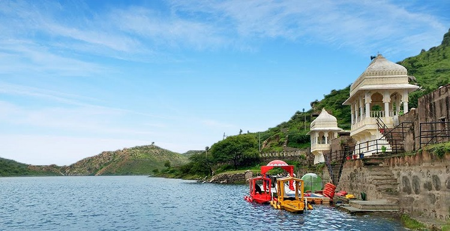

Often referred to as the 'Venice of the East', the city of lakes Udaipur is located around azure water lakes and is
hemmed in by lush green hills of Aravallis. The
famous Lake Palace, located in the middle of Lake Pichola is one of the most
beautiful sights of Udaipur. It is also home to Jaisamand Lake, claimed to be the second
largest man-made sweet water lake in
Asia. The beautiful City Palace and Sajjangarh (Monsoon Palace) add to the architectural beauty and grandeur of the city.
The city is also known for its profusion of zinc and marble. Solar observatory in Lake Fateh Sagar is the only observatory in India
located on an island and has
been made on the pattern of Big Bear Lake in Southern California. The ten-day Shilpgram Festival
which starts from 21 Dec to 30 Dec pulls in a large number of
people interested in arts and crafts.
Udaipur was founded in 1553 by Maharana Udai Singh II as the new capital of Mewar Kingdom. It is located in the
fertile, circular Girwa Valley to the southwest of
Nagda, which was the first capital of Mewar.
ATTRACTIONS & PLACES TO VISIT AND EXPLORE IN UDAIPUR
UDAIPUR CITY PALACE The City Palace towers over Lake Pichola. The balconies, cupolas, and towers of the palace give a |
 BADI LAKE Badi Lake is an artificial lake that was built by Maharana Raj Singh to help the city counterbalance the |
 SAHELIYON KI BARI Built by Maharana Sangram Singh II as a garden for women, Saheliyon-ki-Bari or the |
UDAIPUR BIOLOGICAL PARK The Udaipur Biological Park, also known as the Sajjangarh Biological Park is located just beneath the |
HOW TO REACH HERE

Dabok Airport, also known as Maharana Pratap Airport is the closest at about 25 km northeast of the city centre.
There are daily flights from Delhi and Mumbai on Jet Airways, Air India and SpiceJet.

Udaipur is easily accessible by road from every major destination in India, including Chittorgarh,
Ahmedabad, Jodhpur, Ajmer, Sawai Madhopur / Ranthambore, Jaipur, Bikaner, Agra, Delhi, Mumbai and Khajuraho.
Udaipur is connected by rail to several major cities in India including Chittorgarh, Ahmedabad, Ajmer,
Sawai Madhopur, Jaipur, Agra, Delhi, Mumbai and Khajuraho.